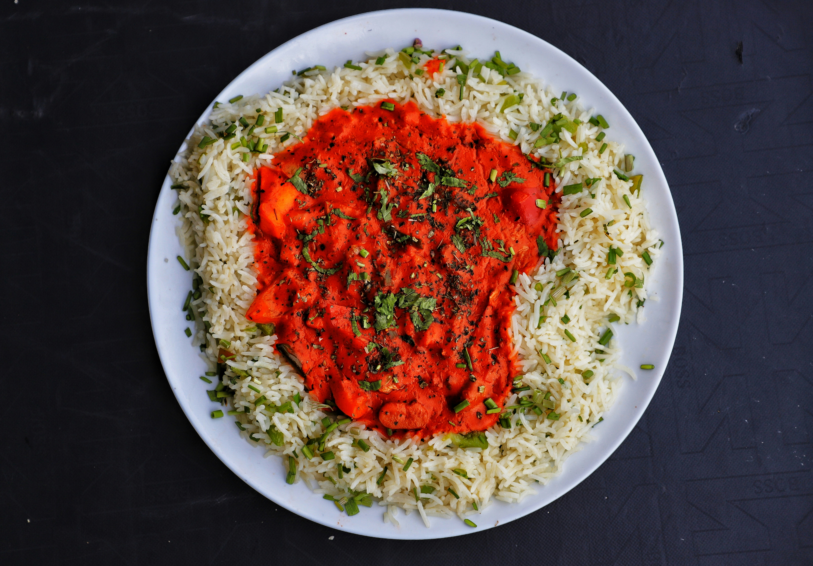

Arroz a la cubana
Home

Ésto es una receta de arroz a la cubana fácil y rápida, vamos que es lo de siempre.
Ingredients
- 2 tazas de arroz
- 4 tazas de agua
- 1 plátano maduro
- 2 huevos
- Sal al gusto
- Salsa de tomate
Steps
- En una olla, hierve el agua con sal y añade el arroz. Cocina a fuego lento hasta que el arroz esté tierno.
- Mientras se cocina el arroz, pela y corta el plátano en rodajas.
- En una sartén, fríe los huevos al gusto.
- Sirve el arroz en un plato, echa la salsa de tomate, luego coloca las rodajas de plátano por encima y acompaña con los huevos fritos.